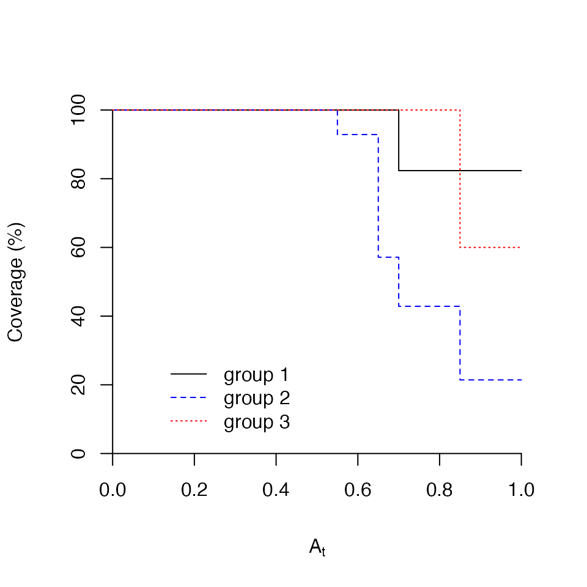
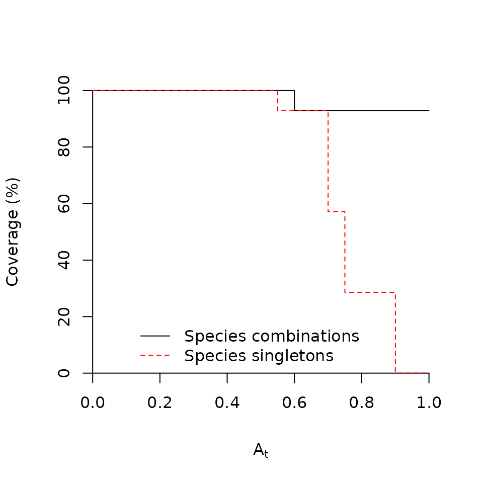

IndicatorSpeciesAnalysis.RmdDetermining the occurrence or abundance of a small set of indicator species, as an alternative to sampling the entire community, has been particularly useful in longterm environmental monitoring for conservation or ecological management. Species are chosen as indicators if they:
In this tutorial we will show how to use the functions included in package indicspecies to conduct indicator species analysis. This package was originally created as a supplementary material to De Cáceres and Legendre (2009), but has been developing since then and now indicspecies updates are distributed from CRAN at GitHub.
Before doing anything else, we need to load the functions of the package:
library(indicspecies)
#> Loading required package: permuteIndicator species are often determined using an analysis of the relationship between the species occurrence or abundance values from a set of sampled sites and the classification of the same sites into site groups, which may represent habitat types, community types, disturbance states, etc. Thus, there are two data elements in an indicator species analysis: (1) the community data matrix; and (2) the vector that describes the classification of sites into groups.
This is a matrix (or a data frame) with sites in rows and species in columns. Normally, we will use functions like read.table() to read our data set from a file. In this example we load our example dataset into the workspace using:
data(wetland)The wetland data set describes the vegetation of the Adelaide river alluvial plain (Australia), as sampled by Bowman and Wilson (1987). It contains the abundance values of 33 species (columns) in 41 sites (rows).
In order to run an indicator species analysis we need a vector containing the classification of the sites into groups. The intepretation of these site groups is left to the user. A vector of site groups can be created, for example, using the R functions c() and rep():
groups = c(rep(1, 17), rep(2, 14), rep(3,10))
groups
#> [1] 1 1 1 1 1 1 1 1 1 1 1 1 1 1 1 1 1 2 2 2 2 2 2 2 2 2 2 2 2 2 2 3 3 3 3 3 3 3
#> [39] 3 3 3Alternatively, one can obtain a classification using non-hierarchical cluster analysis:
wetkm = kmeans(wetland, centers=3)
groupskm = wetkm$cluster
groupskm
#> 5 8 13 4 17 3 9 21 16 14 2 15 1 7 10 40 23 25 22 20 6 18 12 39 19 11
#> 1 1 1 1 1 1 1 1 1 1 1 1 1 1 1 2 2 2 2 2 2 2 2 2 2 2
#> 30 34 28 31 26 29 33 24 36 37 41 27 32 35 38
#> 3 3 3 3 2 2 2 3 3 3 3 3 3 1 1If the site classification vector is obtained independently of species data, the significance of statistical tests carried out on the indicator species will be meaningful. For example, one could classify the sites using environmental data before indicator species analysis. An example is found in Borcard, Gillet, and Legendre (2011).
multipatt()
Function multipatt() is the most commonly used function of indicspecies. It allows determining lists of species that are associated to particular groups of sites (or combinations of those). Once we have the two data components mentioned in the previous section, we are ready to run an indicator species analysis using multipatt().
When the aim is to determine which species can be used as indicators of certain site group an approach commonly used in ecology is the Indicator Value (Dufrêne and Legendre 1997). These authors defined an Indicator Value (IndVal) index to measure the association between a species and a site group. The method of Dufrêne and Legendre (1997) calculates the IndVal index between the species and each site group and then looks for the group corresponding to the highest association value. Finally, the statistical significance of this relationship is tested using a permutation test. IndVal is the default index used to measure the association between a species and a group of sites in multipatt(). However, by default multipatt() uses an extension of the original Indicator Value method, because the function looks for indicator species of both individual site groups and combinations of site groups, as explained in De Cáceres, Legendre, and Moretti (2010).
Indicator species analysis (with site group combinations) can be run using:
indval = multipatt(wetland, groups,
control = how(nperm=999)) As mentioned before, by default multipatt() uses the IndVal index (func = "IndVal.g") as test statistic. Actually, the square root of IndVal is returned by the multipatt() function. The option control = how(nperm=999) allows choosing the number of random permutations required for the permutational test (this number affects the precision of the p-value). Function how() from the permute package allows defining more complex permutational designs.
When the indicator species analysis is completed, we can obtain the list of indicator species for each site group (or site group combination) using:
summary(indval)
#>
#> Multilevel pattern analysis
#> ---------------------------
#>
#> Association function: IndVal.g
#> Significance level (alpha): 0.05
#>
#> Total number of species: 33
#> Selected number of species: 10
#> Number of species associated to 1 group: 6
#> Number of species associated to 2 groups: 4
#>
#> List of species associated to each combination:
#>
#> Group 1 #sps. 3
#> stat p.value
#> Ludads 0.907 0.001 ***
#> Orysp. 0.823 0.003 **
#> Psespi 0.602 0.017 *
#>
#> Group 3 #sps. 3
#> stat p.value
#> Pancam 0.910 0.001 ***
#> Eupvac 0.724 0.003 **
#> Cynarc 0.602 0.010 **
#>
#> Group 1+2 #sps. 1
#> stat p.value
#> Elesp. 0.741 0.005 **
#>
#> Group 2+3 #sps. 3
#> stat p.value
#> Melcor 0.876 0.001 ***
#> Phynod 0.715 0.009 **
#> Echell 0.651 0.008 **
#> ---
#> Signif. codes: 0 '***' 0.001 '**' 0.01 '*' 0.05 '.' 0.1 ' ' 1In our wetland community data, ‘Ludads’ is strongly and significantly associated with Group 1, whereas ‘Pancam’ would be a good indicator of Group 3. In addition, there are some species whose patterns of abundance are more associated with a combination of groups. For example, ‘Melcor’ is strongly associated with the combination of Groups 2 and 3.
It is important to stress that the indicator species analysis is conducted for each species independently, although the results are often summarized for all species. User should bear in mind possible problems of multiple testing when making community-level statements such as ‘the number of indicator species is X’ (De Cáceres and Legendre 2009; Legendre and Legendre 2012).
If the association index used in multipatt() is func = "IndVal" or func = "IndVal.g", one can also inspect the indicator value components when displaying the results. Indeed, the indicator value index is the product of two components, called ‘A’ and ‘B’ (Dufrêne and Legendre 1997; De Cáceres and Legendre 2009):
To display the indicator value components ‘A’ and ‘B’ one simply uses:
summary(indval, indvalcomp=TRUE)
#>
#> Multilevel pattern analysis
#> ---------------------------
#>
#> Association function: IndVal.g
#> Significance level (alpha): 0.05
#>
#> Total number of species: 33
#> Selected number of species: 10
#> Number of species associated to 1 group: 6
#> Number of species associated to 2 groups: 4
#>
#> List of species associated to each combination:
#>
#> Group 1 #sps. 3
#> A B stat p.value
#> Ludads 1.0000 0.8235 0.907 0.001 ***
#> Orysp. 0.6772 1.0000 0.823 0.003 **
#> Psespi 0.8811 0.4118 0.602 0.017 *
#>
#> Group 3 #sps. 3
#> A B stat p.value
#> Pancam 0.8278 1.0000 0.910 0.001 ***
#> Eupvac 0.6546 0.8000 0.724 0.003 **
#> Cynarc 0.7241 0.5000 0.602 0.010 **
#>
#> Group 1+2 #sps. 1
#> A B stat p.value
#> Elesp. 1.0000 0.5484 0.741 0.005 **
#>
#> Group 2+3 #sps. 3
#> A B stat p.value
#> Melcor 0.8764 0.8750 0.876 0.001 ***
#> Phynod 0.8752 0.5833 0.715 0.009 **
#> Echell 0.9246 0.4583 0.651 0.008 **
#> ---
#> Signif. codes: 0 '***' 0.001 '**' 0.01 '*' 0.05 '.' 0.1 ' ' 1This gives us additional information about why species can be used as indicators. For example, ‘Ludads’ is a good indicator of Group 1 because it occurs in sites belonging to this group only (i.e., A = 1.0000), although not all sites belonging to Group 1 include the species (i.e., B = 0.8235). In contrast, ‘Pancam’ can be used to indicate Group 3 because it appears in all sites belonging to this group (i.e., B = 1.0000) and it is largely (but not completely) restricted to it (i.e., A = 0.8278).
In our previous calls to summary() only the species that were significantly associated with site groups (or site group combinations) were shown. One can display the result of the indicator species analysis for all species, regardless of whether the permutational test was significant or not. This is done by changing the significance level in the summary:
summary(indval, alpha=1)
#>
#> Multilevel pattern analysis
#> ---------------------------
#>
#> Association function: IndVal.g
#> Significance level (alpha): 1
#>
#> Total number of species: 33
#> Selected number of species: 29
#> Number of species associated to 1 group: 21
#> Number of species associated to 2 groups: 8
#>
#> List of species associated to each combination:
#>
#> Group 1 #sps. 5
#> stat p.value
#> Ludads 0.907 0.001 ***
#> Orysp. 0.823 0.003 **
#> Psespi 0.602 0.017 *
#> Polatt 0.420 0.149
#> Casobt 0.243 1.000
#>
#> Group 2 #sps. 6
#> stat p.value
#> Aesind 0.445 0.242
#> Alyvag 0.335 0.422
#> Abefic 0.267 0.590
#> Poa2 0.267 0.595
#> Poa1 0.267 0.599
#> Helcri 0.267 0.599
#>
#> Group 3 #sps. 10
#> stat p.value
#> Pancam 0.910 0.001 ***
#> Eupvac 0.724 0.003 **
#> Cynarc 0.602 0.010 **
#> Abemos 0.447 0.062 .
#> Merhed 0.402 0.195
#> Ludoct 0.316 0.224
#> Passcr 0.316 0.263
#> Dendio 0.316 0.235
#> Physp. 0.316 0.235
#> Goopur 0.316 0.235
#>
#> Group 1+2 #sps. 2
#> stat p.value
#> Elesp. 0.741 0.005 **
#> Carhal 0.402 0.440
#>
#> Group 2+3 #sps. 6
#> stat p.value
#> Melcor 0.876 0.001 ***
#> Phynod 0.715 0.009 **
#> Echell 0.651 0.008 **
#> Echpas 0.584 0.260
#> Cyprot 0.500 0.080 .
#> Ipocop 0.354 0.341
#> ---
#> Signif. codes: 0 '***' 0.001 '**' 0.01 '*' 0.05 '.' 0.1 ' ' 1Parameter alpha is by default set to alpha = 0.05, and hides all species association that are not significant at this level. By setting alpha = 1 we say we want to display the group to which each species is associated, regardless of whether the association significant or not. However, note that in our example we obtain the results of 29 (21+8) species. As there are 33 species in the data set, there are still four species missing in this summary. This happens because those species have their highest IndVal value for the set of all sites. In other words, those species occur in sites belonging to all groups. The association with the set of all sites cannot be statistically tested, because there is no external group for comparison. In order to know which species are those, one has to inspect the object sign returned by multipatt():
indval$sign
#> s.1 s.2 s.3 index stat p.value
#> Abefic 0 1 0 2 0.2672612 0.590
#> Merhed 0 0 1 3 0.4019185 0.195
#> Alyvag 0 1 0 2 0.3347953 0.422
#> Pancam 0 0 1 3 0.9098495 0.001
#> Abemos 0 0 1 3 0.4472136 0.062
#> Melcor 0 1 1 6 0.8757059 0.001
#> Ludoct 0 0 1 3 0.3162278 0.224
#> Eupvac 0 0 1 3 0.7236825 0.003
#> Echpas 0 1 1 6 0.5842649 0.260
#> Passcr 0 0 1 3 0.3162278 0.263
#> Poa2 0 1 0 2 0.2672612 0.595
#> Carhal 1 1 0 4 0.4016097 0.440
#> Dendio 0 0 1 3 0.3162278 0.235
#> Casobt 1 0 0 1 0.2425356 1.000
#> Aesind 0 1 0 2 0.4447093 0.242
#> Cyprot 0 1 1 6 0.5000000 0.080
#> Ipocop 0 1 1 6 0.3535534 0.341
#> Cynarc 0 0 1 3 0.6017217 0.010
#> Walind 1 1 1 7 0.4938648 NA
#> Sessp. 1 1 1 7 0.6984303 NA
#> Phynod 0 1 1 6 0.7145356 0.009
#> Echell 0 1 1 6 0.6509834 0.008
#> Helind 1 1 1 7 0.6984303 NA
#> Ipoaqu 1 1 1 7 0.4938648 NA
#> Orysp. 1 0 0 1 0.8229074 0.003
#> Elesp. 1 1 0 4 0.7405316 0.005
#> Psespi 1 0 0 1 0.6023402 0.017
#> Ludads 1 0 0 1 0.9074852 0.001
#> Polatt 1 0 0 1 0.4200840 0.149
#> Poa1 0 1 0 2 0.2672612 0.599
#> Helcri 0 1 0 2 0.2672612 0.599
#> Physp. 0 0 1 3 0.3162278 0.235
#> Goopur 0 0 1 3 0.3162278 0.235After accessing the object indval$sign, we know that the four species whose highest IndVal corresponded to the set of all sites were ‘Valind’, ‘Sessp.’, ‘Helind’ and ‘Ipoaqu’, as indicated by the missing values in the p.value column of the data frame. The first columns of indicate (with ones and zeroes) which site groups were included in the combination preferred by the species. Then, the column indicates the index of the site group combination (see subsection Excluding site group combinations in multipatt() below). The remaining two columns are the association statistic and the p-value of the permutational test.
Several other indices can be used to analyze the association between a species and a group of sites (De Cáceres and Legendre 2009). Diagnostic (or indicator) species are an important tool in vegetation science, because these species can be used to characterize and indicate specific plant community types. A statistic commonly used to determine the association (also known as fidelity, not to be confounded with the indicator value component) between species and vegetation types is Pearson’s phi coefficient of association (Chytrý et al. 2002). This coefficient is a measure of the correlation between two binary vectors. It is possible to calculate the phi coefficient in multipatt() after transforming our community data to presence-absence:
wetlandpa = ifelse(wetland>0,1,0)
phi = multipatt(wetlandpa, groups, func = "r",
control = how(nperm=999)) What would be the association index if we had used abundance values instead of presence and absences (i.e. wetland instead of wetlandpa)? The abundance-based counterpart of the phi coefficient is called the point biserial correlation coefficient.
It is a good practice to correct the phi coefficient for the fact that some groups have more sites than others (Tichý and Chytrý 2006). To do that, we need to use func = "r.g" instead of func = "r":
phi = multipatt(wetlandpa, groups, func = "r.g",
control = how(nperm=999)) Remember that the default association index of multipatt() is func = "IndVal.g", which also includes “.g”. In fact, the Indicator Value index defined by Dufrêne and Legendre (1997) already incorporated a correction for unequal group sizes. It is possible to avoid this correction by calling multipatt() with func = "IndVal". However, in general we recommend using either func = "IndVal.g" or func = "r.g" for indicator species analysis.
Indicator value and correlation indices usually produce similar results. Indeed, if we display the results of the phi coefficient of association we see that they are qualitatively similar to those of IndVal:
summary(phi)
#>
#> Multilevel pattern analysis
#> ---------------------------
#>
#> Association function: r.g
#> Significance level (alpha): 0.05
#>
#> Total number of species: 33
#> Selected number of species: 9
#> Number of species associated to 1 group: 7
#> Number of species associated to 2 groups: 2
#>
#> List of species associated to each combination:
#>
#> Group 1 #sps. 3
#> stat p.value
#> Ludads 0.870 0.001 ***
#> Orysp. 0.668 0.001 ***
#> Psespi 0.413 0.016 *
#>
#> Group 2 #sps. 1
#> stat p.value
#> Phynod 0.436 0.011 *
#>
#> Group 3 #sps. 3
#> stat p.value
#> Pancam 0.748 0.001 ***
#> Eupvac 0.537 0.008 **
#> Cynarc 0.492 0.012 *
#>
#> Group 1+2 #sps. 1
#> stat p.value
#> Elesp. 0.538 0.003 **
#>
#> Group 2+3 #sps. 1
#> stat p.value
#> Melcor 0.612 0.001 ***
#> ---
#> Signif. codes: 0 '***' 0.001 '**' 0.01 '*' 0.05 '.' 0.1 ' ' 1Nevertheless, there are some differences between indicator values and correlation indices (De Cáceres, Font, and Oliva 2008; De Cáceres and Legendre 2009). Correlation indices are used for determining the ecological preferences of species among a set of alternative site groups or site group combinations. Indicator value indices are used for assessing the predictive values of species as indicators of the conditions prevailing in site groups, e.g. for field determination of community types or ecological monitoring.
An advantage of the phi and point biserial coefficients is that they can take negative values. When this happens, the value of the index is expressing the fact that a species tends to ‘avoid’ particular environmental conditions. We will find negative association values if we inspect the strength of association in the results of multipatt() when these coefficients are used:
round(head(phi$str),3)
#> 1 2 3 1+2 1+3 2+3
#> Abefic -0.110 0.221 -0.110 0.110 -0.221 0.110
#> Merhed -0.223 -0.047 0.270 -0.270 0.047 0.223
#> Alyvag -0.024 0.214 -0.190 0.190 -0.214 0.024
#> Pancam -0.585 -0.163 0.748 -0.748 0.163 0.585
#> Abemos -0.189 -0.189 0.378 -0.378 0.189 0.189
#> Melcor -0.612 0.142 0.470 -0.470 -0.142 0.612In contrast, indicator values are always non-negative:
round(head(indval$str),3)
#> 1 2 3 1+2 1+3 2+3 1+2+3
#> Abefic 0.000 0.267 0.000 0.180 0.000 0.204 0.156
#> Merhed 0.000 0.117 0.402 0.079 0.245 0.354 0.271
#> Alyvag 0.113 0.335 0.000 0.311 0.089 0.256 0.271
#> Pancam 0.038 0.230 0.910 0.183 0.589 0.781 0.625
#> Abemos 0.000 0.000 0.447 0.000 0.272 0.289 0.221
#> Melcor 0.191 0.509 0.739 0.484 0.610 0.876 0.796Unlike with indicator value coefficients, the set of all sites can never be considered with the phi or point biserial coefficients, because these coefficients always require a set of sites for comparison, besides the target site group or site group combination of interest.
multipatt()
When conducting indicator species analysis, it may happen that some combinations of site groups are difficult to interpret ecologically. In those cases, we may decide to exclude those combinations from the analysis, so our species may appear associated to other (more interpretable) ecological conditions. There are three ways to restrict the site group combinations to be considered in multipatt().
The original Indicator Value method of Dufrêne and Legendre (1997) did not consider combinations of site groups. In other words, the only site group combinations permitted in the original method were singletons. When using multipatt() it is possible to avoid considering site group combinations, as in the original method, by using duleg = TRUE:
indvalori = multipatt(wetland, groups, duleg = TRUE,
control = how(nperm=999))
summary(indvalori)
#>
#> Multilevel pattern analysis
#> ---------------------------
#>
#> Association function: IndVal.g
#> Significance level (alpha): 0.05
#>
#> Total number of species: 33
#> Selected number of species: 9
#> Number of species associated to 1 group: 9
#> Number of species associated to 2 groups: 0
#>
#> List of species associated to each combination:
#>
#> Group 1 #sps. 3
#> stat p.value
#> Ludads 0.907 0.001 ***
#> Orysp. 0.823 0.001 ***
#> Psespi 0.602 0.014 *
#>
#> Group 2 #sps. 1
#> stat p.value
#> Phynod 0.676 0.006 **
#>
#> Group 3 #sps. 5
#> stat p.value
#> Pancam 0.910 0.001 ***
#> Melcor 0.739 0.001 ***
#> Eupvac 0.724 0.002 **
#> Cynarc 0.602 0.014 *
#> Abemos 0.447 0.040 *
#> ---
#> Signif. codes: 0 '***' 0.001 '**' 0.01 '*' 0.05 '.' 0.1 ' ' 1The second way to exclude site group combinations from a multipatt() analysis is to indicate the maximum order of the combination to be considered. Using the option max.order we can restrict site group combinations to be, for example, singletons (max.order = 1, which is equal to duleg=TRUE), singletons and pairs (max.order = 2), or singletons, pairs and triplets (max.order = 3). In the follow example, only singletons and pairs are considered:
indvalrest = multipatt(wetland, groups, max.order = 2,
control = how(nperm=999))
summary(indvalrest)
#>
#> Multilevel pattern analysis
#> ---------------------------
#>
#> Association function: IndVal.g
#> Significance level (alpha): 0.05
#>
#> Total number of species: 33
#> Selected number of species: 10
#> Number of species associated to 1 group: 6
#> Number of species associated to 2 groups: 4
#>
#> List of species associated to each combination:
#>
#> Group 1 #sps. 3
#> stat p.value
#> Ludads 0.907 0.001 ***
#> Orysp. 0.823 0.002 **
#> Psespi 0.602 0.017 *
#>
#> Group 3 #sps. 3
#> stat p.value
#> Pancam 0.910 0.001 ***
#> Eupvac 0.724 0.006 **
#> Cynarc 0.602 0.010 **
#>
#> Group 1+2 #sps. 1
#> stat p.value
#> Elesp. 0.741 0.006 **
#>
#> Group 2+3 #sps. 3
#> stat p.value
#> Melcor 0.876 0.001 ***
#> Phynod 0.715 0.005 **
#> Echell 0.651 0.019 *
#> ---
#> Signif. codes: 0 '***' 0.001 '**' 0.01 '*' 0.05 '.' 0.1 ' ' 1In this case the output looks like a the output of an unrestricted multipatt() execution, because the only combination that is excluded is the set of all sites, which cannot be tested for significance and thus never appears in the summary.
There is a third, more flexible, way of restricting site group combinations. The input parameter vector restcomb allows specifying the combinations of site groups that are permitted in multipatt(). In order to learn how to use parameter restcomb, we must first understand that inside multipatt() site groups and site group combinations are referred to with integers. Site group combinations are numbered starting with single groups and then increasing the order of combinations. For example, if there are three site groups, the first three integers ‘1’ to ‘3’ identify those groups. Then, ‘4’ identifies the combination of Group 1 and Group 2, ‘5’ identifies the combination of Group 1 and Group 3, and ‘6’ identifies the combination of Group 2 and Group 3. Finally, ‘7’ identifies the combination of all three groups.
The numbers composing the vector passed to restcomb indicate the site groups and site group combinations that we want multipatt() to considered as valid options. For example, if we do not want to consider the combination of Group 1 and Group 2, we will exclude combination ‘4’ from vector restcomb:
indvalrest = multipatt(wetland, groups, restcomb = c(1,2,3,5,6),
control = how(nperm=999))
summary(indvalrest)
#>
#> Multilevel pattern analysis
#> ---------------------------
#>
#> Association function: IndVal.g
#> Significance level (alpha): 0.05
#>
#> Total number of species: 33
#> Selected number of species: 9
#> Number of species associated to 1 group: 6
#> Number of species associated to 2 groups: 3
#>
#> List of species associated to each combination:
#>
#> Group 1 #sps. 3
#> stat p.value
#> Ludads 0.907 0.001 ***
#> Orysp. 0.823 0.003 **
#> Psespi 0.602 0.019 *
#>
#> Group 3 #sps. 3
#> stat p.value
#> Pancam 0.910 0.001 ***
#> Eupvac 0.724 0.004 **
#> Cynarc 0.602 0.008 **
#>
#> Group 2+3 #sps. 3
#> stat p.value
#> Melcor 0.876 0.001 ***
#> Phynod 0.715 0.004 **
#> Echell 0.651 0.013 *
#> ---
#> Signif. codes: 0 '***' 0.001 '**' 0.01 '*' 0.05 '.' 0.1 ' ' 1If we compare these last results with those including all possible site group combinations, we will realize that species ‘Elesp.’ was formerly an indicator of Group 1 and Group 2, and now it does not appear in the list of indicator species. If fact, if we examine the results more closely we see that the highest IndVal for ‘Elesp’ is achieved for group 1, but this relationship is not significant:
indvalrest$sign
#> s.1 s.2 s.3 index stat p.value
#> Abefic 0 1 0 2 0.2672612 0.559
#> Merhed 0 0 1 3 0.4019185 0.231
#> Alyvag 0 1 0 2 0.3347953 0.448
#> Pancam 0 0 1 3 0.9098495 0.001
#> Abemos 0 0 1 3 0.4472136 0.061
#> Melcor 0 1 1 5 0.8757059 0.001
#> Ludoct 0 0 1 3 0.3162278 0.253
#> Eupvac 0 0 1 3 0.7236825 0.004
#> Echpas 0 1 1 5 0.5842649 0.211
#> Passcr 0 0 1 3 0.3162278 0.223
#> Poa2 0 1 0 2 0.2672612 0.622
#> Carhal 1 0 0 1 0.3313667 0.738
#> Dendio 0 0 1 3 0.3162278 0.226
#> Casobt 1 0 0 1 0.2425356 1.000
#> Aesind 0 1 0 2 0.4447093 0.227
#> Cyprot 0 1 1 5 0.5000000 0.065
#> Ipocop 0 1 1 5 0.3535534 0.321
#> Cynarc 0 0 1 3 0.6017217 0.008
#> Walind 1 0 1 4 0.4406873 0.701
#> Sessp. 0 1 1 5 0.5901665 0.713
#> Phynod 0 1 1 5 0.7145356 0.004
#> Echell 0 1 1 5 0.6509834 0.013
#> Helind 0 1 1 5 0.5720540 0.824
#> Ipoaqu 1 0 1 4 0.4053049 0.927
#> Orysp. 1 0 0 1 0.8229074 0.003
#> Elesp. 1 0 0 1 0.5534178 0.646
#> Psespi 1 0 0 1 0.6023402 0.019
#> Ludads 1 0 0 1 0.9074852 0.001
#> Polatt 1 0 0 1 0.4200840 0.145
#> Poa1 0 1 0 2 0.2672612 0.617
#> Helcri 0 1 0 2 0.2672612 0.617
#> Physp. 0 0 1 3 0.3162278 0.256
#> Goopur 0 0 1 3 0.3162278 0.256Restricting site group combinations is also possible with the phi and point biserial coefficients.
Although multipatt() is a user-friendly function for indicator species analysis, other functions are also useful to study the association between species and site groups.
strassoc()
Function strassoc() allows calculating a broad hand of association indices, described in De Cáceres and Legendre (2009). For example, we can focus on the ‘A’ component of IndVal:
prefstat = strassoc(wetland, cluster=groups, func="A.g")
round(head(prefstat),3)
#> 1 2 3
#> Abefic 0.000 1.000 0.000
#> Merhed 0.000 0.192 0.808
#> Alyvag 0.215 0.785 0.000
#> Pancam 0.024 0.148 0.828
#> Abemos 0.000 0.000 1.000
#> Melcor 0.124 0.330 0.546A feature of strassoc() that is lacking in multipatt() is the possibility to obtain confidence interval limits by bootstrapping. In this case, the function returns a list with three elements: stat, lowerCI and upperCI:
prefstat = strassoc(wetland, cluster=groups, func="A.g",
nboot.ci = 199)
round(head(prefstat$lowerCI),3)
#> 1 2 3
#> Abefic 0.000 0.000 0.000
#> Merhed 0.000 0.000 0.000
#> Alyvag 0.000 0.000 0.000
#> Pancam 0.000 0.036 0.671
#> Abemos 0.000 0.000 0.000
#> Melcor 0.045 0.245 0.462
round(head(prefstat$upperCI),3)
#> 1 2 3
#> Abefic 0.000 1.000 0.000
#> Merhed 0.000 1.000 1.000
#> Alyvag 1.000 1.000 0.000
#> Pancam 0.088 0.271 0.941
#> Abemos 0.000 0.000 1.000
#> Melcor 0.203 0.414 0.644For example, the 95% confidence interval for the ‘A’ component of the association between ‘Pancam’ and Group 3 is [0.671, 0.941].
signassoc()
As we explained before, multipatt() statistically tests the association between the species and its more strongly associated site group (or site group combination). By contrast, signassoc() allows one to test the association between the species and each group of sites, regardless of whether the association value was the highest or not. Moreover, the function allows one to test both one-sided and two-sided hypotheses. For example, the following line tests whether the frequency of the species in each site group is higher or lower than random:
prefsign = signassoc(wetland, cluster=groups, alternative = "two.sided",
control = how(nperm=199))
head(prefsign)
#> 1 2 3 best psidak
#> Abefic 1.00 0.65 1.00 2 0.957125
#> Merhed 0.44 0.66 0.22 3 0.525448
#> Alyvag 0.93 0.23 0.89 2 0.543467
#> Pancam 0.01 0.22 0.01 1 0.029701
#> Abemos 0.67 0.87 0.15 3 0.385875
#> Melcor 0.01 0.83 0.01 1 0.029701The last columns of the results indicate the group for which the p-value was the lowest, and the p-value corrected for multiple testing using the Sidak method.
Besides knowing what species can be useful indicators of site groups (or site group combinations), it is sometimes useful to know the proportion of sites of a given site group where one or another indicator is found. We call this quantity coverage of the site group. Determining the coverage of site groups can be useful for habitat or vegetation types encompassing a broad geographic area (De Cáceres et al. 2012), because there may exist some areas where none of the valid indicators can be found.
coverage()
The coverage can be calculated for all the site groups of a multipatt() object using the function coverage():
coverage(wetland, indvalori)
#> 1 2 3
#> 1 1 1Note that to obtain the coverage we need to input both the community data set and the object of class multipatt(). In this case the coverage was complete (i.e. 100%) for site groups ‘1’ and ‘3’. In contrast, group ‘2’ has a lower coverage because only one species, ‘Phynod’, can be considered indicator of the site group, and this species does not always occur in sites of the group.
The coverage of site groups depends on how many and which indicators are considered as valid. Statistical significance (i.e., alpha) determined in multipatt() can be used to determine what indicators are valid, but we can add more requirements to the validity of indicator species by specifying additional parameters to the function coverage(). For example, if we want to know the coverage of our site groups with indicators that are significant and whose ‘A’ value is equal or higher than 0.8, we can use:
coverage(wetland, indvalori, At = 0.8, alpha = 0.05)
#> 1 2 3
#> 0.8235294 0.0000000 1.0000000Note that, after adding this extra requirement, group ‘2’ has 0% coverage and the coverage of group ‘1’ has also decreased.
plotcoverage()
It is possible to know how the coverage changes with ‘A’ threshold used to select good indicators. This is obtained by drawing the coverage values corresponding to different threshold values. This is what the plotcoverage() function does for us:
plotcoverage(x=wetland, y=indvalori, group="1", lty=1)
plotcoverage(x=wetland, y=indvalori, group="2", lty=2, col="blue", add=TRUE)
plotcoverage(x=wetland, y=indvalori, group="3", lty=3, col="red", add=TRUE)
legend(x = 0.1, y=30,
legend=c("group 1","group 2", "group 3"),
lty=c(1,2,3), col=c("black","blue","red"), bty="n")
As you can see in the example, function plotcoverage() has to be called for one group at a time. However, several plots can be drawn one onto the other using the option add=TRUE.
Ecological indicators can be of many kinds. De Cáceres et al. (2012) recently explored the indicator value of combinations of species instead of just considering individual species. The rationale behind this approach is that two or three species, when found together, bear more ecological information than a single one.
The association between species combinations and groups of sites is studied in the same way as for individual species. However, instead of analyzing a site-by-species matrix, we need a matrix with as many rows as there are sites and as many columns as there are species combinations. We can obtain that matrix using the function combinespecies():
wetcomb = combinespecies(wetland, max.order = 2)$XC
dim(wetcomb)
#> [1] 41 286The resulting data frame has the same number of sites (i.e. 41) but as many columns as species combinations (in this case 41 columns). Each element of the data frame contains an abundance value, which is the minimum abundance value among all the species forming the combination, for the corresponding site. In our example, we used max.order = 2 to limit the order of combinations. Therefore, only pairs of species were considered. Once we have this new data set, we can use it in multipatt():
indvalspcomb = multipatt(wetcomb, groups, duleg = TRUE,
control = how(nperm=999))
summary(indvalspcomb, indvalcomp = TRUE)
#>
#> Multilevel pattern analysis
#> ---------------------------
#>
#> Association function: IndVal.g
#> Significance level (alpha): 0.05
#>
#> Total number of species: 286
#> Selected number of species: 42
#> Number of species associated to 1 group: 42
#> Number of species associated to 2 groups: 0
#>
#> List of species associated to each combination:
#>
#> Group 1 #sps. 14
#> A B stat p.value
#> Orysp.+Ludads 1.0000 0.8235 0.907 0.001 ***
#> Ludads 1.0000 0.8235 0.907 0.001 ***
#> Orysp. 0.6772 1.0000 0.823 0.001 ***
#> Sessp.+Ludads 1.0000 0.4118 0.642 0.001 ***
#> Orysp.+Psespi 1.0000 0.4118 0.642 0.006 **
#> Elesp.+Ludads 1.0000 0.4118 0.642 0.004 **
#> Psespi+Ludads 1.0000 0.4118 0.642 0.004 **
#> Orysp.+Elesp. 0.7424 0.5294 0.627 0.016 *
#> Sessp.+Orysp. 0.9081 0.4118 0.611 0.007 **
#> Psespi 0.8811 0.4118 0.602 0.009 **
#> Helind+Ludads 1.0000 0.3529 0.594 0.011 *
#> Walind+Orysp. 1.0000 0.2941 0.542 0.020 *
#> Walind+Ludads 1.0000 0.2941 0.542 0.020 *
#> Ipoaqu+Ludads 1.0000 0.2941 0.542 0.018 *
#>
#> Group 2 #sps. 10
#> A B stat p.value
#> Phynod+Elesp. 0.9162 0.5714 0.724 0.001 ***
#> Phynod 0.6396 0.7143 0.676 0.006 **
#> Phynod+Helind 0.6922 0.6429 0.667 0.003 **
#> Helind+Elesp. 0.6861 0.5714 0.626 0.013 *
#> Phynod+Echell 0.8654 0.3571 0.556 0.018 *
#> Echell+Elesp. 0.8586 0.3571 0.554 0.021 *
#> Aesind+Elesp. 1.0000 0.2857 0.535 0.007 **
#> Echpas+Phynod 0.8293 0.2857 0.487 0.041 *
#> Eupvac+Cyprot 1.0000 0.2143 0.463 0.039 *
#> Echpas+Cyprot 1.0000 0.2143 0.463 0.048 *
#>
#> Group 3 #sps. 18
#> A B stat p.value
#> Pancam 0.8278 1.0000 0.910 0.001 ***
#> Pancam+Melcor 0.7769 1.0000 0.881 0.001 ***
#> Pancam+Echell 1.0000 0.6000 0.775 0.001 ***
#> Eupvac+Echell 1.0000 0.6000 0.775 0.001 ***
#> Pancam+Eupvac 0.7455 0.8000 0.772 0.001 ***
#> Melcor 0.5463 1.0000 0.739 0.001 ***
#> Melcor+Eupvac 0.6648 0.8000 0.729 0.004 **
#> Eupvac 0.6546 0.8000 0.724 0.001 ***
#> Pancam+Cynarc 1.0000 0.5000 0.707 0.001 ***
#> Pancam+Sessp. 0.8077 0.6000 0.696 0.001 ***
#> Melcor+Echell 0.7368 0.6000 0.665 0.004 **
#> Melcor+Cynarc 0.8077 0.5000 0.635 0.005 **
#> Cynarc 0.7241 0.5000 0.602 0.011 *
#> Melcor+Sessp. 0.5895 0.6000 0.595 0.034 *
#> Eupvac+Cynarc 0.8485 0.4000 0.583 0.015 *
#> Cynarc+Sessp. 0.7778 0.4000 0.558 0.029 *
#> Cynarc+Phynod 1.0000 0.3000 0.548 0.016 *
#> Cynarc+Echell 1.0000 0.3000 0.548 0.011 *
#> ---
#> Signif. codes: 0 '***' 0.001 '**' 0.01 '*' 0.05 '.' 0.1 ' ' 1The best indicators for both Group 1 and Group 3 are individual species (‘Ludads’ and ‘Pancam’). However, Group 2 is best indicated if we find, in the same community, ‘Phynod’ and ‘Elesp’. Note that the species forming the indicator combination do not need to be good single-species indicators themselves. In our example ‘Phynod’ is a good indicator of Group 2 but ‘Elesp.’ is not. As an aside, note that we used the option duleg=TRUE in this last example, hence excluding site group combinations, for simplicity.
indicators()
In the previous example, there were many combinations of species that were significantly associated any of the site groups. There is another, more efficient, way of exploring the potential indicators for a given target site group. Say, for example, that we want to determine indicators for our Group 2, and we want to consider not only species pairs but also species trios. We can run the indicator analysis using:
sc= indicators(X=wetland, cluster=groups, group=2,
max.order = 3, verbose=TRUE,
At=0.5, Bt=0.2)
#> Target site group: 2
#> Number of candidate species: 33
#> Number of sites: 41
#> Size of the site group: 14
#> Starting species 1 ... accepted combinations: 0
#> Starting species 2 ... accepted combinations: 0
#> Starting species 3 ... accepted combinations: 0
#> Starting species 4 ... accepted combinations: 3
#> Starting species 5 ... accepted combinations: 3
#> Starting species 6 ... accepted combinations: 24
#> Starting species 7 ... accepted combinations: 24
#> Starting species 8 ... accepted combinations: 27
#> Starting species 9 ... accepted combinations: 34
#> Starting species 10 ... accepted combinations: 34
#> Starting species 11 ... accepted combinations: 34
#> Starting species 12 ... accepted combinations: 34
#> Starting species 13 ... accepted combinations: 34
#> Starting species 14 ... accepted combinations: 34
#> Starting species 15 ... accepted combinations: 45
#> Starting species 16 ... accepted combinations: 49
#> Starting species 17 ... accepted combinations: 49
#> Starting species 18 ... accepted combinations: 49
#> Starting species 19 ... accepted combinations: 49
#> Starting species 20 ... accepted combinations: 53
#> Starting species 21 ... accepted combinations: 66
#> Starting species 22 ... accepted combinations: 69
#> Starting species 23 ... accepted combinations: 72
#> Starting species 24 ... accepted combinations: 73
#> Starting species 25 ... accepted combinations: 73
#> Starting species 26 ... accepted combinations: 73
#> Starting species 27 ... accepted combinations: 73
#> Starting species 28 ... accepted combinations: 73
#> Starting species 29 ... accepted combinations: 73
#> Starting species 30 ... accepted combinations: 73
#> Starting species 31 ... accepted combinations: 73
#> Starting species 32 ... accepted combinations: 73
#> Starting species 33 ... accepted combinations: 73
#> Number of valid combinations: 73
#> Number of remaining species: 14
#> Calculating statistical significance (permutational test)...We can discard species combinations with low indicator values by setting thresholds for components A and B (in our example using At=0.5 and Bt=0.2). The parameter verbose = TRUE allowed us to obtain information about the analysis process. Note that, by default, the indicators() function will consider species combinations up to an order of 5 (i.e. max.order = TRUE). This can result in long computation times if the set of candidate species is not small. Similarly to multipatt(), we can print the results of indicators() for the most useful indicators, using:
print(sc, sqrtIVt = 0.6)
#> A B sqrtIV p.value
#> Phynod+Helind+Elesp. 1.0000000 0.5714286 0.7559289 0.005
#> Phynod+Elesp. 0.9000000 0.5714286 0.7171372 0.005
#> Phynod 0.6666667 0.7142857 0.6900656 0.005
#> Phynod+Helind 0.7142857 0.6428571 0.6776309 0.010
#> Helind+Elesp. 0.6428571 0.5714286 0.6060915 0.025
#> Melcor+Phynod+Elesp. 0.8571429 0.4285714 0.6060915 0.010
#> Melcor+Helind+Elesp. 0.8571429 0.4285714 0.6060915 0.010The species combinations are listed in decreasing indicator value order. Function indicators() also calculates the statistical significance of indicator combinations, by making an internal call to signassoc(). In this case, we obtain that a combination of ‘Phynod’, ‘Helind’ and ‘Elesp.’ is even a better indicator than ‘Phynod’ and ‘Elesp.’. Note that the ‘A’ and IndVal values for the pair ‘Phynod’ and ‘Elesp.’ do not exactly match those obtained before. This is because indicators() uses ‘IndVal’ and not ‘IndVal.g’ as default association statistic. In contrast to multipatt(), in indicators() association statistics are restricted to ‘IndVal’ and ‘IndVal.g’.
Although we did not show it here, indicators() can be run with the option requesting for bootstrap confidence intervals (using option nboot.ci). This allow us to know the reliability of the indicator value estimates, which is specially important for site groups of small size (De Cáceres et al. 2012).
indicators()
We can determine the proportion of sites of the target site group where one or another indicator is found, using, as shown before for objects of class multipatt(), the function coverage():
coverage(sc)
#> [1] 1In this case the coverage was complete (i.e. 100%). Like we did for objects of class multipatt(), we can add requirements to the validity of indicators. For example:
coverage(sc, At=0.8, alpha =0.05)
#> [1] 0.9285714While we do not show here, in the case of objects of class indicators() we recommend to explore the coverage using the lower boundary of confidence intervals, using option type of function coverage().
Finally, we can also plot coverage values corresponding to different thresholds:
plotcoverage(sc)
plotcoverage(sc, max.order=1, add=TRUE, lty=2, col="red")
legend(x=0.1, y=20, legend=c("Species combinations","Species singletons"),
lty=c(1,2), col=c("black","red"), bty="n")
The coverage plot tells us that if we want to use a very large `A’ threshold (i.e., if we want to be very strict to select valid indicators), we won’t have enough valid indicators to cover all the area of our target site group. This limitation is more severe if only single species are considered.
pruneindicators()
As there may be many species combinations that could be used as indicators, the function pruneindicators() helps us to reduce the possibilities. First, the function selects those indicators (species or species combinations) that are valid according to the input thresholds At, Bt and alpha. Second, the function discards those valid indicators whose occurrence patterns are nested within other valid indicators. Third, the function evaluates the coverage of the remaining set of indicators. Finally, it explores subsets of increasing number of indicators, until the same coverage as the coverage of the complete set is attained and the subset of indicators is returned.
sc2=pruneindicators(sc, At=0.8, Bt=0.2, verbose=TRUE)
#> Coverage of initial set of 73 indicators: 100%
#> Coverage of valid set of 31 indicators: 92.9%
#> Coverage of valid set of 7 nonnested indicators: 92.9%
#> Checking 7 subsets of 1 indicator(s) maximum coverage: 57.1%
#> Checking 21 subsets of 2 indicator(s).......... maximum coverage: 85.7%
#> Checking 35 subsets of 3 indicator(s)........ maximum coverage: 92.9%
#> Coverage of final set of 3 indicators: 92.9%
print(sc2)
#> A B sqrtIV p.value
#> Phynod+Elesp. 0.9000000 0.5714286 0.7171372 0.005
#> Cyprot 0.8666667 0.2857143 0.4976134 0.015
#> Echpas+Phynod 0.8000000 0.2857143 0.4780914 0.040In our example, and using these thresholds, the best indicators for group ‘2’ would be: (a) the combination of ‘Phynod’ and ‘Elesp.’; (b) ‘Cyprot’ and (c) ‘Echpas’ and ‘Phynod’. The three indicators together cover 93% of the sites belonging to the target site group.
predict.indicators()
The function indicators() provides a model that can be used to predict a target site group. Once a given combination of species has been found, the corresponding ‘A’ value is an estimate of the probability of being in the target site group given the combination of species has been found. Therefore, the set of indicators could be used to predict the likelihood of the target site group in a new data set. The function predict.indicators() has exactly this role. It takes the results of indicators() and a new community data matrix as input. Given this input, the function calculates the probability of the target site group for each site. The following code exemplifies the use of predict.indicators() with the same data that was used for the calibration of the indicator model (a new community data matrix should be used in normal applications):
p<-predict(sc2, wetland)Of course, this will return biased estimates, as the data set used to build the model is the same as the target data set for which probabilities are desired. The same would be obtained using:
p<-predict(sc2)which uses the original data set storied in the indicators() object. If we want to evaluate these probability estimates in a cross-validated fashion (i.e., excluding each target site for the calculation of positive predictive values and the probability of the target site group), we can use:
pcv<-predict(sc2, cv=TRUE)We can compare the probabilities (evaluated by resubstitution and cross-validation) with the original group memberships:
data.frame(Group2 = as.numeric(wetkm$cluster==2), Prob = p, Prob_CV = pcv)
#> Group2 Prob Prob_CV
#> 5 0 0.0000000 0.0000000
#> 8 0 0.0000000 0.0000000
#> 13 0 0.0000000 0.0000000
#> 4 0 0.0000000 0.0000000
#> 17 0 0.0000000 0.0000000
#> 3 0 0.0000000 0.0000000
#> 9 0 0.0000000 0.0000000
#> 21 0 0.0000000 0.0000000
#> 16 0 0.0000000 0.0000000
#> 14 0 0.0000000 0.0000000
#> 2 0 0.0000000 0.0000000
#> 15 0 0.0000000 0.0000000
#> 1 0 0.0000000 0.0000000
#> 7 0 0.0000000 0.0000000
#> 10 0 0.0000000 0.0000000
#> 40 1 0.9000000 1.0000000
#> 23 1 0.0000000 0.0000000
#> 25 1 0.9000000 0.8888889
#> 22 1 0.8000000 0.7500000
#> 20 1 0.9000000 0.8888889
#> 6 1 0.9000000 0.8888889
#> 18 1 0.9000000 0.8888889
#> 12 1 0.9000000 0.8888889
#> 39 1 0.9000000 0.8888889
#> 19 1 0.9000000 0.8750000
#> 11 1 0.9000000 0.8888889
#> 30 0 0.8666667 0.8181818
#> 34 0 0.8666667 0.8333333
#> 28 0 0.0000000 0.0000000
#> 31 0 0.8666667 0.8461538
#> 26 1 0.8666667 0.8181818
#> 29 1 0.8666667 0.9285714
#> 33 1 0.8666667 0.9285714
#> 24 0 0.0000000 0.0000000
#> 36 0 0.0000000 0.0000000
#> 37 0 0.0000000 0.0000000
#> 41 0 0.0000000 0.0000000
#> 27 0 0.0000000 0.0000000
#> 32 0 0.0000000 0.0000000
#> 35 0 0.0000000 0.0000000
#> 38 0 0.0000000 0.0000000Cross-validated probabilities will tend to be lower than probabilities evaluated by resubstitution for sites originally belonging to the target site group and higher for other sites.
Borcard, Daniel, François Gillet, and Pierre Legendre. 2011. Numerical Ecology in R. Use R! Springer Science, New York.
Bowman, D. M. J. S., and B. A. Wilson. 1987. “Wetland Vegetation Pattern on the Adelaide River Flood Plain, Northern Territory, Australia.” Proceedings of the Royal Society of Queensland 97: 69–77.
Chytrý, Milan, Lubomı́r Tichý, Jason Holt, and Zoltán Botta-Dukát. 2002. “Determination of diagnostic species with statistical fidelity measures.” Journal of Vegetation Science 13 (1): 79–90.
De Cáceres, Miquel, X. Font, and F. Oliva. 2008. “Assessing species diagnostic value in large data sets: A comparison between phi-coefficient and Ochiai index.” Journal of Vegetation Science 19 (6): 779–88.
De Cáceres, Miquel, and Pierre Legendre. 2009. “Associations between species and groups of sites: indices and statistical inference.” Ecology 90 (12): 3566–74.
De Cáceres, Miquel, Pierre Legendre, and Marco Moretti. 2010. “Improving indicator species analysis by combining groups of sites.” Oikos 119 (10): 1674–84.
De Cáceres, Miquel, Pierre Legendre, Susan K. Wiser, and Lluı́s Brotons. 2012. “Using Species Combinations in Indicator Value Analyses.” Methods in Ecology and Evolution, in press.
Dufrêne, Marc, and Pierre Legendre. 1997. “Species assemblages and indicator species: the need for a flexible asymmetrical approach.” Ecological Monographs 67 (3): 345–66.
Legendre, Pierre, and Louis Legendre. 2012. Numerical Ecology. 3rd English Edition. Elsevier Science BV, Amsterdam.
Tichý, Lubomı́r, and Milan Chytrý. 2006. “Statistical determination of diagnostic species for site groups of unequal size.” Journal of Vegetation Science 17 (6): 809.